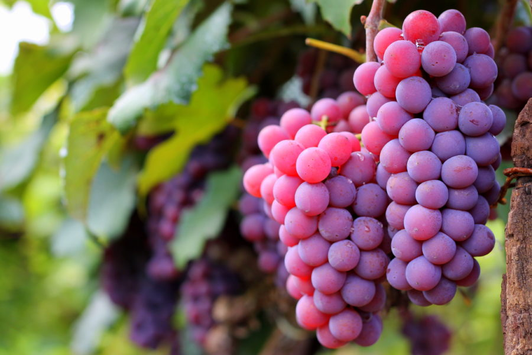
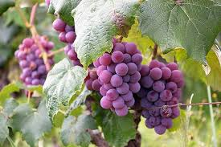
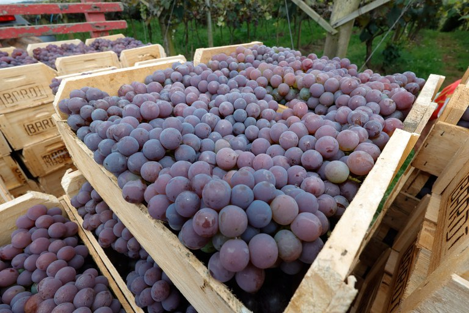

sobre a uva niágara

A cultivar surgiu a partir de mutação somática ocorrida em plantas de Niagara Branca, por Antonio Carbonari, em 1933, no município de Louveira, estado de São Paulo.
Rapidamente a variedade se disseminou pelos estados do Sul e Sudeste. A partir de vinhedos existentes na área da Estação Experimental da Embrapa Uva e Vinho, o material propagativo foi obtido, tendo sua introdução realizada na década de 80 em Telado do Laboratório da Virologia Vegetal.
Posteriormente, a partir de estacas vegetativas, plantas foram formadas e submetidas ao tratamento térmico in vivo para remoção viral durante dois ciclos sequenciais de calor (totalizando 158 dias). Depois deste processo, secções vegetais foram retiradas e estabelecidas in vitro, sendo realizada a regeneração de plantas a partir da extração de meristemas apicais por cultura de tecidos. Estas novas plantas, foram indexadas continuamente por métodos biológicos e moleculares para comprovação de sua sanidade em relação aos principais vírus que infectam a videira, especialmente:
os vírus do complexo do enrolamento-da-folha; os vírus do complexo do intumescimento-dos-ramos; o vírus da degenerência-da-videira; o vírus da mancha-das-nervuras e o vírus da caneluras-do-tronco. Em 2007, o material de sanidade superior foi introduzido em Unidade de Validação de Termonúmeros, na Embrapa Uva e Vinho em Bento Gonçalves, Rio Grande do Sul. Em 2014, depois de confirmada sua normalidade agronômica, identidade genética e sanidade viral; foi solicitada sua inserção no Registro Nacional de Cultivares/MAPA, tendo a Embrapa como uma de suas mantenedoras.
Em 2015, ocorreu o primeiro edital de comercialização do material vegetal para constituição de jardins clonais em viveiristas licenciados pela Embrapa
Sobre a capital da uva niágra

Considerada a Capital da Uva Niágara, Rosário do Ivaí se destaca na produção da fruta de grão docinho.
As extensas plantações, localizadas próximas às rodovias que dão acesso à cidade, agradam aos olhos e adoçam o paladar.
Contribuição para a saúde

vitaminas A, B, C, E e K, além de antioxidantes,que fazem bem a pele, olhos e têm ações anti-inflamatória e antimicrobiana.
Relogio da uva
Tempo restante para a festa da uva
7
dias
7
horas
7
min
7
seg